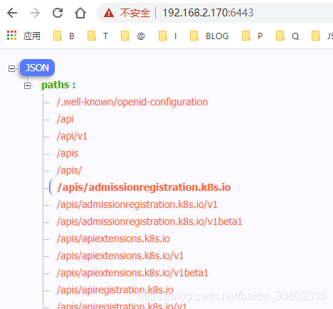

# centos k8s 简单了解 (集群环境搭建与使用)
环境说明：windows10，vmware16 Pro 虚拟机，centos7.6 镜像，一共装两台虚拟机模拟（1 台 master 和 1 台 node，实际应更多）
虚拟机网络使用桥接模式（自动），每个虚拟机配置为硬盘 20G，内存 2G，处理器 2 个
# 安装 kubeadm， kubelet，kubectl
[root@master ~]# swapoff -a # 禁用虚拟内存 | |
[root@master ~]# cat <<EOF > /etc/yum.repos.d/kubernetes.repo | |
[kubernetes] | |
name=Kubernetes | |
baseurl=https://mirrors.aliyun.com/kubernetes/yum/repos/kubernetes-el7-x86_64 | |
enabled=1 | |
gpgcheck=1 | |
repo_gpgcheck=1 | |
gpgkey=https://mirrors.aliyun.com/kubernetes/yum/doc/yum-key.gpg https://mirrors.aliyun.com/kubernetes/yum/doc/rpm-package-key.gpg | |
EOF | |
[root@master ~]# yum install -y kubectl kubelet kubeadm | |
[root@master ~]# systemctl enable kubelet # 开机启动 | |
[root@master ~]# systemctl start kubelet | |
[root@master ~]# echo "1" >/proc/sys/net/bridge/bridge-nf-call-iptables | |
[root@master ~]# kubeadm init --pod-network-cidr=10.244.0.0/16 # 2 处理器，内存 > 1700M |
# k8s.gcr.io 问题，先通过 vps 将 images push 到 docker hub，然后再从 docker hub pull
k8s问题 | |
error execution phase preflight: [preflight] Some fatal errors occurred: | |
[ERROR ImagePull]: failed to pull image k8s.gcr.io/kube-apiserver:v1.21.3: output: Error response from daemon: Get https://k8s.gcr.io/v2/: net/http: request canceled while waiting for connection (Client.Timeout exceeded while awaiting headers) | |
, error: exit status 1 | |
[ERROR ImagePull]: failed to pull image k8s.gcr.io/kube-controller-manager:v1.21.3: output: Error response from daemon: Get https://k8s.gcr.io/v2/: net/http: request canceled while waiting for connection (Client.Timeout exceeded while awaiting headers) | |
, error: exit status 1 | |
[ERROR ImagePull]: failed to pull image k8s.gcr.io/kube-scheduler:v1.21.3: output: Error response from daemon: Get https://k8s.gcr.io/v2/: net/http: request canceled while waiting for connection (Client.Timeout exceeded while awaiting headers) | |
, error: exit status 1 | |
[ERROR ImagePull]: failed to pull image k8s.gcr.io/kube-proxy:v1.21.3: output: Error response from daemon: Get https://k8s.gcr.io/v2/: net/http: request canceled while waiting for connection (Client.Timeout exceeded while awaiting headers) | |
, error: exit status 1 | |
[ERROR ImagePull]: failed to pull image k8s.gcr.io/pause:3.4.1: output: Error response from daemon: Get https://k8s.gcr.io/v2/: net/http: request canceled while waiting for connection (Client.Timeout exceeded while awaiting headers) | |
, error: exit status 1 | |
[ERROR ImagePull]: failed to pull image k8s.gcr.io/etcd:3.4.13-0: output: Error response from daemon: Get https://k8s.gcr.io/v2/: net/http: request canceled while waiting for connection (Client.Timeout exceeded while awaiting headers) | |
, error: exit status 1 | |
[ERROR ImagePull]: failed to pull image k8s.gcr.io/coredns/coredns:v1.8.0: output: Error response from daemon: Get https://k8s.gcr.io/v2/: net/http: request canceled while waiting for connection (Client.Timeout exceeded while awaiting headers) | |
, error: exit status 1 |
[root@chumingcheng ~]# docker pull k8s.gcr.io/kube-apiserver:v1.21.3 | |
[root@chumingcheng ~]# docker tag k8s.gcr.io/kube-apiserver:v1.21.3 chumingcheng/kube-apiserver:v1.21.3 | |
[root@chumingcheng ~]# docker push chumingcheng/kube-apiserver:v1.21.3 | |
[root@chumingcheng ~]# docker pull k8s.gcr.io/kube-controller-manager:v1.21.3 | |
[root@chumingcheng ~]# docker tag k8s.gcr.io/kube-controller-manager:v1.21.3 chumingcheng/kube-controller-manager:v1.21.3 | |
[root@chumingcheng ~]# docker push chumingcheng/kube-controller-manager:v1.21.3 | |
[root@chumingcheng ~]# docker pull k8s.gcr.io/kube-scheduler:v1.21.3 | |
[root@chumingcheng ~]# docker tag k8s.gcr.io/kube-scheduler:v1.21.3 chumingcheng/kube-scheduler:v1.21.3 | |
[root@chumingcheng ~]# docker push chumingcheng/kube-scheduler:v1.21.3 | |
[root@chumingcheng ~]# docker pull k8s.gcr.io/kube-proxy:v1.21.3 | |
[root@chumingcheng ~]# docker tag k8s.gcr.io/kube-proxy:v1.21.3 chumingcheng/kube-proxy:v1.21.3 | |
[root@chumingcheng ~]# docker push chumingcheng/kube-proxy:v1.21.3 | |
[root@chumingcheng ~]# docker pull k8s.gcr.io/pause:3.4.1 | |
[root@chumingcheng ~]# docker tag k8s.gcr.io/pause:3.4.1 chumingcheng/pause:3.4.1 | |
[root@chumingcheng ~]# docker push chumingcheng/pause:3.4.1 | |
[root@chumingcheng ~]# docker pull k8s.gcr.io/etcd:3.4.13-0 | |
[root@chumingcheng ~]# docker tag k8s.gcr.io/etcd:3.4.13-0 chumingcheng/etcd:3.4.13-0 | |
[root@chumingcheng ~]# docker push chumingcheng/etcd:3.4.13-0 | |
[root@chumingcheng ~]# docker pull k8s.gcr.io/coredns/coredns:v1.8.0 | |
[root@chumingcheng ~]# docker tag k8s.gcr.io/coredns/coredns:v1.8.0 chumingcheng/coredns/coredns:v1.8.0 | |
[root@chumingcheng ~]# docker push chumingcheng/coredns/coredns:v1.8.0 |
[root@master ~]# docker pull chumingcheng/kube-apiserver:v1.21.3 | |
[root@master ~]# docker tag chumingcheng/kube-apiserver:v1.21.3 k8s.gcr.io/kube-apiserver:v1.21.3 | |
[root@master ~]# docker rmi chumingcheng/kube-apiserver:v1.21.3 | |
... | |
[root@master ~]# docker pull chumingcheng/coredns/coredns:v1.8.0 | |
[root@master ~]# docker tag chumingcheng/coredns/coredns:v1.8.0 k8s.gcr.io/coredns/coredns:v1.8.0 | |
[root@master ~]# docker rmi chumingcheng/coredns/coredns:v1.8.0 |
# 上面问题解决后，执行下面，kubeadm join xxx 这条命令备份（后面节点加入需要执行）
[root@master ~]# kubeadm init --pod-network-cidr=10.244.0.0/16 | |
... | |
Your Kubernetes control-plane has initialized successfully! | |
To start using your cluster, you need to run the following as a regular user: | |
mkdir -p $HOME/.kube | |
sudo cp -i /etc/kubernetes/admin.conf $HOME/.kube/config | |
sudo chown $(id -u):$(id -g) $HOME/.kube/config | |
Alternatively, if you are the root user, you can run: | |
export KUBECONFIG=/etc/kubernetes/admin.conf | |
You should now deploy a pod network to the cluster. | |
Run "kubectl apply -f [podnetwork].yaml" with one of the options listed at: | |
https://kubernetes.io/docs/concepts/cluster-administration/addons/ | |
Then you can join any number of worker nodes by running the following on each as root: | |
kubeadm join 192.168.2.170:6443 --token c9xhek.j1lztmtz06fh7yy7 --discovery-token-ca-cert-hash sha256:e939c045bc5f49e4b7c39b0103f8e704b5f6cb0bbef7677b2f69db9d68cb6de6 | |
[root@master ~]# mkdir -p $HOME/.kube | |
[root@master ~]# sudo cp -i /etc/kubernetes/admin.conf $HOME/.kube/config | |
[root@master ~]# sudo chown $(id -u):$(id -g) $HOME/.kube/config | |
[root@master ~]# sysctl net.bridge.bridge-nf-call-iptables=1 | |
[root@master k8s]# curl -O https://raw.githubusercontent.com/coreos/flannel/v0.10.0/Documentation/kube-flannel.yml # 这里可能拿不到，我直接从 github 搜了个直接用了，https://github.com/mrlxxx/kube-flannel.yml/edit/master/kube-flannel.yml | |
[root@master k8s]# kubectl apply -f kube-flannel.yml | |
Warning: policy/v1beta1 PodSecurityPolicy is deprecated in v1.21+, unavailable in v1.25+ | |
podsecuritypolicy.policy/psp.flannel.unprivileged created | |
Warning: rbac.authorization.k8s.io/v1beta1 ClusterRole is deprecated in v1.17+, unavailable in v1.22+; use rbac.authorization.k8s.io/v1 ClusterRole | |
clusterrole.rbac.authorization.k8s.io/flannel configured | |
Warning: rbac.authorization.k8s.io/v1beta1 ClusterRoleBinding is deprecated in v1.17+, unavailable in v1.22+; use rbac.authorization.k8s.io/v1 ClusterRoleBinding | |
clusterrolebinding.rbac.authorization.k8s.io/flannel unchanged | |
serviceaccount/flannel unchanged | |
configmap/kube-flannel-cfg configured | |
daemonset.apps/kube-flannel-ds-amd64 created | |
daemonset.apps/kube-flannel-ds-arm64 created | |
daemonset.apps/kube-flannel-ds-arm created | |
daemonset.apps/kube-flannel-ds-ppc64le created | |
daemonset.apps/kube-flannel-ds-s390x created |
# 上面 master 部署结束，现在去配置节点（另一条非 master 虚拟机）执行，报 error
[root@node ~]# swapoff -a | |
[root@node ~]# echo "1" >/proc/sys/net/bridge/bridge-nf-call-iptables | |
[root@slave ~]# kubeadm join 192.168.2.170:6443 --token c9xhek.j1lztmtz06fh7yy7 --discovery-token-ca-cert-hash sha256:e939c045bc5f49e4b7c39b0103f8e704b5f6cb0bbef7677b2f69db9d68cb6de6 | |
[preflight] Running pre-flight checks | |
[WARNING IsDockerSystemdCheck]: detected "cgroupfs" as the Docker cgroup driver. The recommended driver is "systemd". Please follow the guide at https://kubernetes.io/docs/setup/cri/ | |
error execution phase preflight: couldn't validate the identity of the API Server: Get "https://192.168.2.170:6443/api/v1/namespaces/kube-public/configmaps/cluster-info?timeout=10s": dial tcp 192.168.2.170:6443: connect: no route to host | |
To see the stack trace of this error execute with --v=5 or higher | |
[root@slave ~]# |
上面的原因是因为使用 vmware 安装虚拟机后默认打开了防火墙，执行以下命令即可
----------------------------------------------------------------- | |
[root@node ~]# iptables --flush | |
[root@node ~]# iptables -tnat --flush | |
[root@node ~]# systemctl stop firewalld | |
[root@node ~]# systemctl disable firewalld | |
Removed symlink /etc/systemd/system/multi-user.target.wants/firewalld.service. | |
Removed symlink /etc/systemd/system/dbus-org.fedoraproject.FirewallD1.service. | |
[root@node ~]# systemctl restart docker | |
[root@node ~]# kubeadm join 192.168.2.170:6443 --token bgsrcq.d5sqfplppncii6sp \ | |
> --discovery-token-ca-cert-hash sha256:7bf637f77ff1e56fa137e0ca1433db22e44fed5e0057b910a8abc4b110b3ec0a | |
[preflight] Running pre-flight checks | |
[WARNING IsDockerSystemdCheck]: detected "cgroupfs" as the Docker cgroup driver. The recommended driver is "systemd". Please follow the guide at https://kubernetes.io/docs/setup/cri/ | |
[preflight] Reading configuration from the cluster... | |
[preflight] FYI: You can look at this config file with 'kubectl -n kube-system get cm kubeadm-config -o yaml' | |
[kubelet-start] Writing kubelet configuration to file "/var/lib/kubelet/config.yaml" | |
[kubelet-start] Writing kubelet environment file with flags to file "/var/lib/kubelet/kubeadm-flags.env" | |
[kubelet-start] Starting the kubelet | |
[kubelet-start] Waiting for the kubelet to perform the TLS Bootstrap... | |
This node has joined the cluster: | |
* Certificate signing request was sent to apiserver and a response was received. | |
* The Kubelet was informed of the new secure connection details. | |
Run 'kubectl get nodes' on the control-plane to see this node join the cluster. | |
[root@node ~]# | |
---------------------------------------------------------------------- | |
[root@master k8s]# iptables --flush | |
[root@master k8s]# iptables -tnat --flush | |
[root@master k8s]# systemctl stop firewalld | |
[root@master k8s]# systemctl disable firewalld | |
[root@master k8s]# systemctl restart docker | |
[root@master k8s]# kubectl get pods -n kube-system -o wide | |
NAME READY STATUS RESTARTS AGE IP NODE NOMINATED NODE READINESS GATES | |
coredns-558bd4d5db-6l2jf 1/1 Running 2 18m 10.244.0.6 master <none> <none> | |
coredns-558bd4d5db-vkrvp 1/1 Running 1 18m 10.244.0.5 master <none> <none> | |
etcd-master 1/1 Running 1 18m 192.168.2.170 master <none> <none> | |
kube-apiserver-master 1/1 Running 1 18m 192.168.2.170 master <none> <none> | |
kube-controller-manager-master 1/1 Running 1 18m 192.168.2.170 master <none> <none> | |
kube-flannel-ds-amd64-7jq99 0/1 Init:0/1 0 70s 192.168.2.174 node <none> <none> | |
kube-flannel-ds-amd64-vzrlt 1/1 Running 2 13m 192.168.2.170 master <none> <none> | |
kube-proxy-fmrwp 0/1 ContainerCreating 0 70s 192.168.2.174 node <none> <none> | |
kube-proxy-m7mr4 1/1 Running 2 18m 192.168.2.170 master <none> <none> | |
kube-scheduler-master 1/1 Running 1 18m 192.168.2.170 master <none> <none> | |
[root@master k8s]# kubectl get nodes | |
NAME STATUS ROLES AGE VERSION | |
master Ready control-plane,master 22m v1.21.3 | |
node NotReady <none> 5m9s v1.21.3 | |
[root@master k8s]# |
# 重新 init master，即断开和 node 的连接，这样 node 可以重新 join
[root@master ~]# sudo kubeadm reset | |
[root@master ~]# ps -efl|grep kube | |
[root@master ~]# sudo kubeadm init --pod-network-cidr=10.244.0.0/16 | |
... ... | |
Your Kubernetes control-plane has initialized successfully! | |
To start using your cluster, you need to run the following as a regular user: | |
mkdir -p $HOME/.kube | |
sudo cp -i /etc/kubernetes/admin.conf $HOME/.kube/config | |
sudo chown $(id -u):$(id -g) $HOME/.kube/config | |
Alternatively, if you are the root user, you can run: | |
export KUBECONFIG=/etc/kubernetes/admin.conf | |
You should now deploy a pod network to the cluster. | |
Run "kubectl apply -f [podnetwork].yaml" with one of the options listed at: | |
https://kubernetes.io/docs/concepts/cluster-administration/addons/ | |
Then you can join any number of worker nodes by running the following on each as root: | |
kubeadm join 192.168.2.170:6443 --token bgsrcq.d5sqfplppncii6sp \ | |
--discovery-token-ca-cert-hash sha256:7bf637f77ff1e56fa137e0ca1433db22e44fed5e0057b910a8abc4b110b3ec0a | |
[root@master ~]# mkdir -p $HOME/.kube | |
[root@master ~]# sudo cp -i /etc/kubernetes/admin.conf $HOME/.kube/config | |
cp: overwrite ‘/root/.kube/config’? y | |
[root@master ~]# sudo chown $(id -u):$(id -g) $HOME/.kube/config | |
[root@master ~]# sudo sysctl net.bridge.bridge-nf-call-iptables=1 | |
net.bridge.bridge-nf-call-iptables = 1 | |
[root@master k8s]# sudo kubectl apply -f kube-flannel.yml |
# 浏览器访问 https://192.168.2.170:6443 / 报 403：forbidden: User "system:anonymous" cannot get path "/" 并且 status 是 Failure。（参考：https://blog.csdn.net/baidu_38432732/article/details/106469037）
[root@master k8s]# grep 'client-certificate-data' ~/.kube/config | head -n 1 | awk '{print $2}' | base64 -d >> kubecfg.crt | |
[root@master k8s]# grep 'client-key-data' ~/.kube/config | head -n 1 | awk '{print $2}' | base64 -d >> kubecfg.key | |
[root@master k8s]# openssl pkcs12 -export -clcerts -inkey kubecfg.key -in kubecfg.crt -out kubecfg.p12 -name "kubernetes-client" | |
Enter Export Password: | |
Verifying - Enter Export Password: | |
[root@master k8s]# ls | |
demo-master demo-master.zip kubecfg.crt kubecfg.key kubecfg.p12 kube-flannel1.yml kube-flannel2.yml kube-flannel.yml | |
[root@master k8s]# |
浏览器导入上面 p12 证书，重启浏览器，访问该地址，可以看到返回 api 所有的 path。

# 使用 kubectl get pods 发现 node 上 2 个 pod 一个一直处于 init 状态，另一个一直处于 ContainerCreating 状态，查看具体信息发现 pull 镜像 k8s.gcr.io/pause:3.4.1 一直 pull 不下来，手动去 node 上 pull 下，最好把 proxy 镜像也顺便一块 pull 下，如果是其他版本镜像，最好从 docker hub 找找，可以按日期查找找最新的，pull 过镜像后可以去 master 上手动删除这俩 pod，然后 k8s 会自动重新初始化这俩 pod。
------------------------------master--------------------------------------- | |
[root@master k8s]# kubectl get po --all-namespaces | |
NAMESPACE NAME READY STATUS RESTARTS AGE | |
kube-system coredns-558bd4d5db-6l2jf 1/1 Running 2 46m | |
kube-system coredns-558bd4d5db-vkrvp 1/1 Running 1 46m | |
kube-system etcd-master 1/1 Running 1 46m | |
kube-system kube-apiserver-master 1/1 Running 1 46m | |
kube-system kube-controller-manager-master 1/1 Running 1 46m | |
kube-system kube-flannel-ds-amd64-7jq99 0/1 Init:0/1 0 28m | |
kube-system kube-flannel-ds-amd64-vzrlt 1/1 Running 2 40m | |
kube-system kube-proxy-fmrwp 0/1 ContainerCreating 0 28m | |
kube-system kube-proxy-m7mr4 1/1 Running 2 46m | |
kube-system kube-scheduler-master 1/1 Running 1 46m | |
[root@master k8s]# kubectl describe pod kube-flannel-ds-amd64-7jq99 -n kube-system | |
... ... get https://k8s.gcr.io/v2/: net/http: request canceled while waiting for connection ... | |
-------------------------------node--------------------------------------- | |
[root@node ~]# docker pull chumingcheng/pause:3.4.1 | |
3.4.1: Pulling from chumingcheng/pause | |
fac425775c9d: Pull complete | |
Digest: sha256:9ec1e780f5c0196af7b28f135ffc0533eddcb0a54a0ba8b32943303ce76fe70d | |
Status: Downloaded newer image for chumingcheng/pause:3.4.1 | |
docker.io/chumingcheng/pause:3.4.1 | |
[root@node ~]# docker tag chumingcheng/pause:3.4.1 k8s.gcr.io/pause:3.4.1 | |
[root@node ~]# docker rmi chumingcheng/pause:3.4.1 | |
Untagged: chumingcheng/pause:3.4.1 | |
Untagged: chumingcheng/pause@sha256:9ec1e780f5c0196af7b28f135ffc0533eddcb0a54a0ba8b32943303ce76fe70d | |
[root@node ~]# docker images | |
REPOSITORY TAG IMAGE ID CREATED SIZE | |
hello-world latest d1165f221234 4 months ago 13.3kB | |
k8s.gcr.io/pause 3.4.1 0f8457a4c2ec 6 months ago 683kB | |
quay.io/coreos/flannel v0.11.0-amd64 ff281650a721 2 years ago 52.6MB | |
[root@node ~]# docker pull chumingcheng/kube-proxy:v1.21.3 | |
v1.21.3: Pulling from chumingcheng/kube-proxy | |
fe5d561940df: Pull complete | |
76d59146d9bf: Pull complete | |
Digest: sha256:af5c9bacb913b5751d2d94e11dfd4e183e97b1a4afce282be95ce177f4a0100b | |
Status: Downloaded newer image for chumingcheng/kube-proxy:v1.21.3 | |
docker.io/chumingcheng/kube-proxy:v1.21.3 | |
[root@node ~]# docker tag chumingcheng/kube-proxy:v1.21.3 k8s.gcr.io/kube-proxy:v1.21.3 | |
[root@node ~]# docker rmi chumingcheng/kube-proxy:v1.21.3 | |
Untagged: chumingcheng/kube-proxy:v1.21.3 | |
Untagged: chumingcheng/kube-proxy@sha256:af5c9bacb913b5751d2d94e11dfd4e183e97b1a4afce282be95ce177f4a0100b | |
[root@node ~]# docker images | |
REPOSITORY TAG IMAGE ID CREATED SIZE | |
k8s.gcr.io/kube-proxy v1.21.3 adb2816ea823 2 weeks ago 103MB | |
hello-world latest d1165f221234 4 months ago 13.3kB | |
k8s.gcr.io/pause 3.4.1 0f8457a4c2ec 6 months ago 683kB | |
quay.io/coreos/flannel v0.11.0-amd64 ff281650a721 2 years ago 52.6MB | |
[root@node ~]# | |
--------------------------------master------------------------------------------ | |
[root@master k8s]# kubectl delete pod kube-flannel-ds-amd64-7jq99 -n kube-system | |
pod "kube-flannel-ds-amd64-7jq99" deleted | |
[root@master k8s]# kubectl delete pod kube-proxy-fmrwp -n kube-system | |
pod "kube-proxy-fmrwp" deleted | |
[root@master k8s]# kubectl get po --all-namespaces | |
NAMESPACE NAME READY STATUS RESTARTS AGE | |
kube-system coredns-558bd4d5db-6l2jf 1/1 Running 2 70m | |
kube-system coredns-558bd4d5db-vkrvp 1/1 Running 1 70m | |
kube-system etcd-master 1/1 Running 1 70m | |
kube-system kube-apiserver-master 1/1 Running 1 70m | |
kube-system kube-controller-manager-master 1/1 Running 1 70m | |
kube-system kube-flannel-ds-amd64-vzrlt 1/1 Running 2 64m | |
kube-system kube-flannel-ds-amd64-z7bs4 1/1 Running 6 5m41s | |
kube-system kube-proxy-fx2g6 1/1 Running 0 5m21s | |
kube-system kube-proxy-m7mr4 1/1 Running 2 70m | |
kube-system kube-scheduler-master 1/1 Running 1 70m | |
[root@master k8s]# |
# 创建 deployments 时候报 error: unable to recognize "deployment.yaml": no matches for kind "Deployment" in version "extensions/v1beta1"
[root@master k8s]# cat deployment.yaml | |
--- | |
apiVersion: extensions/v1beta1 | |
kind: Deployment | |
metadata: | |
name: kube-node | |
spec: | |
replicas: 2 | |
template: | |
metadata: | |
labels: | |
app: web | |
spec: | |
containers: | |
- name: kube-node-demo-instance | |
image: chumingcheng/myhello | |
ports: | |
- containerPort: 8888 | |
[root@master k8s]# kubectl api-resources | grep deployment | |
deployments deploy apps/v1 true Deployment |
将上面 apiVersion 改为 apps/v1 即可。
# 创建 deployment，以一个简单的 nodejs server 项目为例（参考：https://blog.csdn.net/wucong60/article/details/81586272）
[root@master ~]# curl -sL https://rpm.nodesource.com/setup_14.x | sudo bash - | |
[root@master ~]# sudo yum install -y nodejs | |
[root@master ~]# mkdir kube-demo | |
[root@master ~]# cd kube-demo | |
[root@master kube-demo]# touch server.js | |
[root@master kube-demo]# vi server.js # 复制下面内容 | |
[root@master kube-demo]# cat server.js | |
[root@master kube-demo]# cat server.js | |
var http = require('http'); | |
var handleRequest = function(request, response) { | |
console.log('Received request for URL: ' + request.url); | |
response.writeHead(200); | |
response.end('Hello World!'); | |
}; | |
var www = http.createServer(handleRequest); | |
www.listen(8081); | |
[root@master kube-demo]# node server.js # 启动测试下，浏览器访问 8081 测试 | |
[root@master kube-demo]# touch Dockerfile | |
[root@master kube-demo]# docker image build -t kube-demo . | |
[root@master kube-demo]# vi Dockerfile # 复制下面内容 | |
[root@master kube-demo]# cat Dockerfile | |
FROM node:8.11.2 | |
WORKDIR app | |
COPY . . | |
EXPOSE 8081 | |
ENTRYPOINT [ "node","server.js" ] | |
[root@master kube-demo]# docker tag kube-demo chumingcheng/kube-demo | |
[root@master kube-demo]# docker image push chumingcheng/kube-demo | |
[root@master k8s]# vi deployment.yaml # 复制下面内容 | |
[root@master k8s]# cat deployment.yaml | |
--- | |
apiVersion: apps/v1 | |
kind: Deployment | |
metadata: | |
name: kube-node | |
spec: | |
selector: | |
matchLabels: | |
app: web | |
replicas: 2 | |
template: | |
metadata: | |
labels: | |
app: web | |
spec: | |
containers: | |
- name: kube-node-demo-instance | |
image: chumingcheng/kube-demo | |
ports: | |
- containerPort: 8081 | |
[root@master k8s]# kubectl create -f deployment.yaml | |
deployment.apps/kube-node created | |
[root@master k8s]# kubectl get pods | |
NAME READY STATUS RESTARTS AGE | |
kube-node-6fb65f5d5b-c7966 1/1 Running 0 2m3s | |
kube-node-6fb65f5d5b-w5qb9 1/1 Running 0 2m3s | |
[root@master k8s]# kubectl get pods -o wide | |
NAME READY STATUS RESTARTS AGE IP NODE NOMINATED NODE READINESS GATES | |
kube-node-6fb65f5d5b-c7966 1/1 Running 0 3m36s 10.244.1.2 node <none> <none> | |
kube-node-6fb65f5d5b-w5qb9 1/1 Running 0 3m36s 10.244.1.3 node <none> <none> | |
[root@master k8s]# curl 10.244.1.2:8081 | |
Hello World! | |
[root@master k8s]# curl 10.244.1.3:8081 | |
Hello World! | |
[root@master k8s]# |
# 修改和删除 deployments，查看 pod，services
[root@master k8s]# kubectl get pods -o wide | |
NAME READY STATUS RESTARTS AGE IP NODE NOMINATED NODE READINESS GATES | |
kube-node-6fb65f5d5b-c7966 1/1 Running 0 10m 10.244.1.2 node <none> <none> | |
kube-node-6fb65f5d5b-w5qb9 1/1 Running 0 10m 10.244.1.3 node <none> <none> | |
[root@master k8s]# kubectl get pods | |
NAME READY STATUS RESTARTS AGE | |
kube-node-6fb65f5d5b-c7966 1/1 Running 0 11m | |
kube-node-6fb65f5d5b-w5qb9 1/1 Running 0 11m | |
[root@master k8s]# kubectl get deployments --all-namespaces | |
NAMESPACE NAME READY UP-TO-DATE AVAILABLE AGE | |
default kube-node 2/2 2 2 12m | |
kube-system coredns 2/2 2 2 173m | |
[root@master k8s]# kubectl delete -f deployment.yaml # 删除，删除后可重新编辑 deployment.yaml，然后再次创建 | |
deployment.apps "kube-node" deleted | |
[root@master k8s]# kubectl get deployments --all-namespaces | |
NAMESPACE NAME READY UP-TO-DATE AVAILABLE AGE | |
kube-system coredns 2/2 2 2 174m | |
[root@master k8s]# kubectl get pods | |
No resources found in default namespace. | |
[root@master k8s]# kubectl apply -f deployment.yaml # 再次创建 | |
deployment.apps/kube-node created | |
[root@master k8s]# kubectl get deployments --all-namespaces | |
NAMESPACE NAME READY UP-TO-DATE AVAILABLE AGE | |
default kube-node 1/2 2 1 6s | |
kube-system coredns 2/2 2 2 175m | |
[root@master k8s]# kubectl get pods | |
NAME READY STATUS RESTARTS AGE | |
kube-node-6fb65f5d5b-2z6lm 1/1 Running 0 26s | |
kube-node-6fb65f5d5b-p5wr2 1/1 Running 0 26s | |
[root@master k8s]# kubectl edit deployments/kube-node # 实时编辑，保存后会自动生效 | |
Edit cancelled, no changes made. | |
[root@master k8s]# kubectl get services --all-namespaces # 查看 services，在 yaml 里定义 | |
NAMESPACE NAME TYPE CLUSTER-IP EXTERNAL-IP PORT(S) AGE | |
default kubernetes ClusterIP 10.96.0.1 <none> 443/TCP 3h | |
kube-system kube-dns ClusterIP 10.96.0.10 <none> 53/UDP,53/TCP,9153/TCP 3h | |
[root@master k8s]# kubectl get pods | |
NAME READY STATUS RESTARTS AGE | |
kube-node-6fb65f5d5b-2z6lm 1/1 Running 0 8m18s | |
kube-node-6fb65f5d5b-p5wr2 1/1 Running 0 8m18s | |
[root@master k8s]# kubectl describe pod kube-node-6fb65f5d5b-2z6lm | |
Name: kube-node-6fb65f5d5b-2z6lm | |
Namespace: default | |
Priority: 0 | |
Node: node/192.168.2.174 | |
Start Time: Sun, 01 Aug 2021 13:29:04 -0700 | |
Labels: app=web | |
pod-template-hash=6fb65f5d5b | |
Annotations: <none> | |
Status: Running | |
IP: 10.244.1.5 | |
IPs: | |
IP: 10.244.1.5 | |
Controlled By: ReplicaSet/kube-node-6fb65f5d5b | |
Containers: | |
kube-node-demo-instance: | |
Container ID: docker://7f7297b7f8b14c76e6563bbf22fe3d4fc7dba6b81f3c02d944058a28576ad4c1 | |
Image: chumingcheng/kube-demo | |
Image ID: docker-pullable://chumingcheng/kube-demo@sha256:3426bbcf3f6aa091c0ce328b2f3e2c364db7966af460573fdb97a8893cc8187c | |
Port: 8081/TCP | |
Host Port: 0/TCP | |
State: Running | |
Started: Sun, 01 Aug 2021 13:29:11 -0700 | |
Ready: True | |
Restart Count: 0 | |
Environment: <none> | |
Mounts: | |
/var/run/secrets/kubernetes.io/serviceaccount from kube-api-access-698sb (ro) | |
Conditions: | |
Type Status | |
Initialized True | |
Ready True | |
ContainersReady True | |
PodScheduled True | |
Volumes: | |
kube-api-access-698sb: | |
Type: Projected (a volume that contains injected data from multiple sources) | |
TokenExpirationSeconds: 3607 | |
ConfigMapName: kube-root-ca.crt | |
ConfigMapOptional: <nil> | |
DownwardAPI: true | |
QoS Class: BestEffort | |
Node-Selectors: <none> | |
Tolerations: node.kubernetes.io/not-ready:NoExecute op=Exists for 300s | |
node.kubernetes.io/unreachable:NoExecute op=Exists for 300s | |
Events: | |
Type Reason Age From Message | |
---- ------ ---- ---- ------- | |
Normal Scheduled 8m33s default-scheduler Successfully assigned default/kube-node-6fb65f5d5b-2z6lm to node | |
Normal Pulling 8m32s kubelet Pulling image "chumingcheng/kube-demo" | |
Normal Pulled 8m26s kubelet Successfully pulled image "chumingcheng/kube-demo" in 6.371285955s | |
Normal Created 8m26s kubelet Created container kube-node-demo-instance | |
Normal Started 8m26s kubelet Started container kube-node-demo-instance | |
[root@master k8s]# |
# 重启虚拟机后启动 kube（启动 master 和 node，要稍等几分钟才能看到 Ready）
----------------------------------------------------------------------- | |
[root@node conf]# swapoff -a | |
[root@node conf]# systemctl start kubelet | |
----------------------------------------------------------------------- | |
[root@master ~]# swapoff -a | |
[root@master ~]# systemctl start kubelet | |
[root@master ~]# kubectl get nodes | |
NAME STATUS ROLES AGE VERSION | |
master Ready control-plane,master 10h v1.21.3 | |
node Ready <none> 9h v1.21.3 |